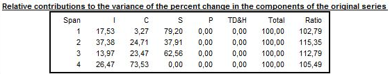
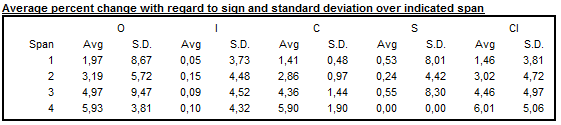
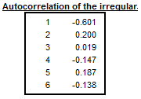
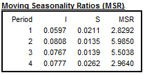

library(RJDemetra)
# estimation interval: option with static dates
user_spec_1<-x13_spec(spec = c("RSA5c", "RSA0", "RSA1", "RSA2c",
"RSA3", "RSA4c", "X11"),
preliminary.check = TRUE,
estimate.from = "2012-06-01",
estimate.to = "2019-12-01")
# estimation interval: option with dynamic numbers of observations
#
# spec can be applied on different series and therefore exclude different dates
user_spec_2<-x13_spec(spec = c("RSA5c", "RSA0", "RSA1", "RSA2c", "RSA3", "RSA4c", "X11"),
estimate.first = 12)
# eestimation on the last 120 obs
user_spec_3<-x13_spec(spec = c("RSA5c", "RSA0", "RSA1", "RSA2c", "RSA3", "RSA4c", "X11"),
estimate.last = 120)
#excluding first 24 and last 36 observations
user_spec_4<-x13_spec(spec = c("RSA5c", "RSA0", "RSA1", "RSA2c", "RSA3", "RSA4c", "X11"),
estimate.exclFirst = 24,
estimate.exclLast = 36)
# Retrieve settingsSeasonal Adjustment
Overview
The goal of seasonal adjustment is to remove seasonal fluctuations a time series. Seasonal fluctuations are quasi-periodic infra-annual movements. They can mask evolution of greater interest for the user such as short term evolutions or long time trends.
This chapter focuses on the practical step by step use of JDemetra+ algorithms, restricted to monthly and quarterly series. For intra-monthly data see the following chapter. The use of graphical user interface and R packages are described simultaneously whenever relevant.
In-depth methodological explanations of the algorithms are covered in separated chapters, in the Methods part.
This chapter is under construction, missing parts will be updated in the coming months.
More information on the steps and best practices of a seasonal adjustment process can be found in the Eurostat guidelines on seasonal adjustment
For an overview on the algorithms and methodological issues, please refer to the Handbook on Seasonal Adjustment
Seasonal Adjustment Algorithms
| Algorithm | Access in GUI | Access in R (v2) | Access in R v3 |
|---|---|---|---|
| X-13 Arima | yes | RJDemetra | rjd3x13 |
| Reg-Arima only | yes | RJDemetra | rjd3x13 |
| X11 decomposition only | yes | RJDemetra | rjd3x13 |
| Tramo-Seats | yes | RJDemetra | rjd3tramoseats |
| Tramo only | yes | RJDemetra | rjd3tramoseats |
| Seats only | - | - | - |
| STL | no | no | rjd3stl |
| STS | no | no | rjd3sts |
Decomposition in unobserved components
To seasonally adjust a series, seasonal factors \(S_{t}\) will be estimated and removed from the original raw series: \(Y_{sa}=Y_{t}/S_{t}\) or \(Y_{sa}=Y_{t}-S_{t}\). To do so the series is first decomposed into unobservable components. Two decomposition models:
The additive model: \(X_{t} = T_{t} + S_{t} + I_{t}\);
The multiplicative model: \(X_{t} = T_{t} \times S_{t} \times I_{t}\).
The main components, each representing the impact of certain types of phenomena on the time series (\(X_{t}\)), are:
The trend (\(T_{t}\)) that captures long-term and medium-term behaviour;
The seasonal component (\(S_{t}\)) representing intra-year fluctuations, monthly or quarterly, that are repeated more or less regularly year after year;
The irregular component (\(I_{t}\)) combining all the other more or less erratic fluctuations not covered by the previous components.
In general, the trend consists of 2 sub-components:
The long-term evolution of the series;
The cycle, that represents the smooth, almost periodic movement around the long-term evolution of the series. It reveals a succession of phases of growth and recession. Trend and cycle are not separated in SA algorithms.
Pre-treatment principles
The goal of this step is to remove deterministic effects (calendar and outliers) in order to improve the decomposition. \[ Y_t = \sum {\alpha}_i O_{it} + \sum\beta_j C_{jt} + \sum {\gamma}_i U_{it} + Y_{lin,t} \]
\(O_{it}\) are the \(i\) final outliers (AO, LS, TC)
\(C_{it}\) are the calendar regressors (automatic or user-defined) (link to calendar chap)
\(U_{it}\) are all the other user-defined regressors (link to outliers and regressors chap)
\(Y_{lin,t} \sim ARIMA(p,d,q)(P,D,Q)\)
Detecting seasonal patterns
A large number of seasonality tests are available in JDemetra+. They can be accessed in the graphical user interface or via R.
In rjd3modelling package:
- Canova-Hansen (
seasonality.canovahansen())
In rjd3sa package:
X-12 combined test (
seasonality.combined())F-test on seasonal dummies (
seasonality.f())Friedman Seasonality Test (
seasonality.friedman())Kruskall-Wallis Seasonality Test (
seasonality.kruskalwallis())Periodogram Seasonality Test (
seasonality.periodogram())QS Seasonality Test (
seasonality.qs())
Performing pre-treatment
The following sections cover how to perform pre-treatment with Reg-ARIMA (or Tramo) algorithms. Tramo and the Reg-Arima part of X13-Arima rely on very similar principles: Reg-Arima modelling. Thus Tramo will be mentioned only to highlight differences with the Reg-Arima part of X13-Arima. Reg-Arima modelling part can be of a seasonal adjustment process or run on its own, we focus first on launching pre-treatment as part of a SA processing.
Default Specifications
Default specifications are set for the whole SA procedure, pre-treatment and decomposition. They are slightly different for X13-ARIMA and Tramo-Seats and can be modified with user defined parameters.
Starting point for X13-ARIMA
| Spec identifier | Log/level detection | Outliers detection | Calendar effects | ARIMA |
|---|---|---|---|---|
| RSA0 | NA | NA | NA | Airline(+mean) |
| RSA1 | automatic | AO/LS/TC | NA | Airline(+mean) |
| RSA2c | automatic | AO/LS/TC | 2 TD vars+Easter | Airline(+mean) |
| RSA3 | automatic | AO/LS/TC | NA | automatic |
| RSA4c | automatic | AO/LS/TC | 2 TD vars+Easter | automatic |
| RSA5 | automatic | AO/LS/TC | 7 TD vars+Easter | automatic |
| X-11 | NA | NA | NA | NA |
explanations:
NA : non applied, for example in RSA3 there is no calendar effect correction
automatic: test is performed
outliers detection : AO/LS/TC type of outliers automatically detected under a critical T-Stat value (default value=4)
calendar
2 regressors: weekdays vs week-ends + LY
7 regressors: each week day vs Sundays + LY
always tested
easter tested (length = 6 days in Tramo, 8 days in X13-Arima)
Starting point for Tramo-Seats
| Spec identifier | Log/level detection | Outliers detection | Calendar effects | ARIMA |
|---|---|---|---|---|
| RSA0 | NA | NA | NA | Airline(+mean) |
| RSA1 | automatic | AO/LS/TC | NA | Airline(+mean) |
| RSA2 | automatic | AO/LS/TC | 2 TD vars+Easter | Airline(+mean) |
| RSA3 | automatic | AO/LS/TC | NA | automatic |
| RSA5 | automatic | AO/LS/TC | 6 TD vars+Easter | automatic |
| RSAfull | automatic | AO/LS/TC | automatic | automatic |
Principle of user setting parameters: can be done from one of the default specifications or any specification in a “save” as” mode very similar in GUI and R, see below.
Spans
Estimation span
Specifies the span (data interval) of the time series to be used in the seasonal adjustment process. The user can restrict the span
Common settings
| Option | Description (expected format) | |
|---|---|---|
| All | default | |
| From | first observation included (yyyy-mm-dd) | |
| To | last observation included (yyyy-mm-dd) | |
| Between | interval [from ; to] included (yyyy-mm-dd to yyyy-mm-dd) | |
| First | number of obs from the beginning of the series included (dynamic) (integer) | |
| Last | number of obs from the end of the series (dynamic)(integer) | |
| Excluding | excluding N first obs and P last obs from the computation,dynamic) (integer) | |
| Preliminary check | check to exclude highly problematic series e.g. the series with a number of identical observations and/or missing values above pre-specified threshold values. (True/False) |
Setting series span in GUI
Use the specification window for a given series and expand the nodes.

Setting series span in R
x13 in version 2
For comprehensive details about x13_spec function see RJDemetra R help pages.
Tramo-Seats in version 2
#excluding first 24 and last 36 observations
user_spec_1<-tramoseats_spec( spec = c("RSAfull", "RSA0", "RSA1", "RSA2", "RSA3", "RSA4", "RSA5"),
estimate.exclFirst = 24,
estimate.exclLast = 36)For comprehensive details about tramoseats_spec function see RJDemetra R help pages.
Setting model span
The user can also specify the span (data interval) of the time series to be used for the estimation of the Reg-ARIMA model coefficients. It allows to impede a chosen part of the data from influencing the regression estimates. Setting works the same way as setting series (estimation) span described above.
Additional (vs series span setting) parameters are described below:
| Tolerance | Convergence tolerance for the non-linear estimation. The absolute changes in the log-likelihood are compared to Tolerance to check the convergence of the estimation iterations. The default setting is 0.0000001. |
| Tramo specific parameters | |
| Exact ML | When this option is marked, an exact maximum likelihood estimation is performed. Alternatively, the Unconditional Least Squares method is used. However, in the current version of JDemetra+ it is not recommended to change this parameter’s value |
| Unit Root Limit | Limit for the autoregressive roots. If the inverse of a real root of the autoregressive polynomial of the ARIMA model is higher than this limit, the root is set equal to 1. The default parameter value is 0.96. |
Setting model span in GUI:
Use the specification window

Setting in R
Tramo example in version 2
#excluding first 24 and last 36 observations
user_spec_1<-tramoseats_spec( spec = c("RSAfull", "RSA0", "RSA1", "RSA2", "RSA3", "RSA4", "RSA5"),
estimate.tol = 0.0000001,
estimate.eml = FALSE,
estimate.urfinal = 0.98)Decomposition Scheme
Parameters
Transformation test : a test is performed to choose between an additive decomposition (no transformation) (link to reg A chap to detail this)
Settings
Function
transform {function=}
Transformation of data. 2 The user can choose between:
None – no transformation of the data;
Log – takes logs of the data;
Auto – the program tests for the log-level specification. This option is recommended for automatic modelling of many series.
The default setting is Auto.
Reg-Arima specific settings
AIC difference
transform {aicdiff=}
Defines the difference in AICC needed to accept no transformation over a log transformation when the automatic transformation
selection option is invoked. The option is disabled when Function is not set to Auto. The default AIC difference value is -2.
Adjust
transform {adjust=}
Options for proportional adjustment for the leap year effect. The option is available when Function is set to Log. Adjust can be set to:
LeapYear – performs a leap year adjustment of monthly or quarterly data;
LengthofPeriod – performs a length-of-month adjustment on monthly data or length-of-quarter adjustment on quarterly data;
None – does not include a correction for the length of the period.
The default setting is None
Tramo specific settings
Fct
Transformation; fct
Controls the bias in the log/level pre-test (the function is active when Function is set to Auto); Fct > 1 favours levels, Fct < 1 favours logs. The default setting is 0.95.
Set in GUI

Set and in R
X13
#excluding first 24 and last 36 observations
user_spec <-x13_spec(spec = c("RSA5c", "RSA0", "RSA1", "RSA2c", "RSA3", "RSA4c", "X11"),
transform.function ="Log", # choose from: c(NA, "Auto", "None", "Log"),
transform.adjust = "LeapYear", #c(NA, "None", "LeapYear", "LengthOfPeriod"),
transform.aicdiff = -3)
#Retrieve settings: to completeTramo-Seats settings
#transfo
user_spec_1<-tramoseats_spec( spec = c("RSAfull", "RSA0", "RSA1", "RSA2", "RSA3", "RSA4", "RSA5"),
transform.function = "Auto", #c(NA, "Auto", "None", "Log"),
transform.fct = 0.5)
# Retrieve settings: to complete Calendar correction
Default specifications for calendar correction
Options related to calendar regressors choice are embedded into default specifications described above.
National calendars not taken into account.
working days
trading days
Leap year regressor
Test: Remove/ Add / None
Easter
Test add / remove / non
duration (enabled when testing removed)
Julian
pre-test
Retrieving parameters
In GUI
Automatically chosen or user-defined calendar options (as well as other pre-adjustment options) are displayed at the top of the MAIN Results NODE

Details of regression results are displayed in the pre processing panel

Setting options
In GUI Use the specification window

Customizing calendars
Under construction.
Outliers and intervention variables
Under construction.
Arima Model
Default specifications
Key specifications on Arima modelling are embedded in default specifications: airline (default model) or full automatic research.
automdl.enabled If TRUE, the automatic modelling of the ARIMA model is enabled. If FALSE, the parameters of the ARIMA model can be specified.
Modifying automatic detection
Control variables for the automatic modelling of the ARIMA model (when automdl.enabled is set to TRUE):
automdl.acceptdefault a logical. If TRUE, the default model (ARIMA(0,1,1)(0,1,1)) may be chosen in the first step of the automatic model identification. If the Ljung-Box Q statistics for the residuals is acceptable, the default model is accepted and no further attempt will be made to identify another model.
automdl.cancel the cancellation limit (numeric). If the difference in moduli of an AR and an MA roots (when estimating ARIMA(1,0,1)(1,0,1) models in the second step of the automatic identification of the differencing orders) is smaller than the cancellation limit, the two roots are assumed equal and cancel out.
automdl.ub1 the first unit root limit (numeric). It is the threshold value for the initial unit root test in the automatic differencing procedure. When one of the roots in the estimation of the ARIMA(2,0,0)(1,0,0) plus mean model, performed in the first step of the automatic model identification procedure, is larger than the first unit root limit in modulus, it is set equal to unity.
automdl.ub2 the second unit root limit (numeric). When one of the roots in the estimation of the ARIMA(1,0,1)(1,0,1) plus mean model, which is performed in the second step of the automatic model identification procedure, is larger than second unit root limit in modulus, it is checked if there is a common factor in the corresponding AR and MA polynomials of the ARMA model that can be cancelled (see automdl.cancel). If there is no cancellation, the AR root is set equal to unity (i.e. the differencing order changes).
automdl.mixed a logical. This variable controls whether ARIMA models with non-seasonal AR and MA terms or seasonal AR and MA terms will be considered in the automatic model identification procedure. If FALSE, a model with AR and MA terms in both the seasonal and non-seasonal parts of the model can be acceptable, provided there are no AR or MA terms in either the seasonal or non-seasonal terms.
automdl.balanced a logical. If TRUE, the automatic model identification procedure will have a preference for balanced models (i.e. models for which the order of the combined AR and differencing operator is equal to the order of the combined MA operator).
automdl.armalimit the ARMA limit (numeric). It is the threshold value for t-statistics of ARMA coefficients and constant term used for the final test of model parsimony. If the highest order ARMA coefficient has a t-value smaller than this value in magnitude, the order of the model is reduced. If the constant term t-value is smaller than the ARMA limit in magnitude, it is removed from the set of regressors.
automdl.reducecv numeric, ReduceCV. The percentage by which the outlier’s critical value will be reduced when an identified model is found to have a Ljung-Box statistic with an unacceptable confidence coefficient. The parameter should be between 0 and 1, and will only be active when automatic outlier identification is enabled. The reduced critical value will be set to (1-ReduceCV)*CV, where CV is the original critical value.
automdl.ljungboxlimit the Ljung Box limit (numeric). Acceptance criterion for the confidence intervals of the Ljung-Box Q statistic. If the LjungBox Q statistics for the residuals of a final model is greater than the Ljung Box limit, then the model is rejected, the outlier critical value is reduced and model and outlier identification (if specified) is redone with a reduced value.
automdl.ubfinal numeric, final unit root limit. The threshold value for the final unit root test. If the magnitude of an AR root for the final model is smaller than the final unit root limit, then a unit root is assumed, the order of the AR polynomial is reduced by one and the appropriate order of the differencing (non-seasonal, seasonal) is increased. The parameter value should be greater than one.
Setting in GUI
Under construction
Setting in R
X13-Arima template in version 2
spec_2 <- x13_spec(spec = spec_1,
automdl.enabled = NA,
automdl.acceptdefault = NA,
automdl.cancel = NA_integer_,
automdl.ub1 = NA_integer_,
automdl.ub2 = NA_integer_,
automdl.mixed = NA,
automdl.balanced = NA,
automdl.armalimit = NA_integer_,
automdl.reducecv = NA_integer_,
automdl.ljungboxlimit = NA_integer_,
automdl.ubfinal = NA_integer_)User-defined Arima model
Control variables for the non-automatic modelling of the ARIMA model (when automdl.enabled is set to FALSE):
arima.mu logical. If TRUE, the mean is considered as part of the ARIMA model.
arima.p numeric. The order of the non-seasonal autoregressive (AR) polynomial.
arima.d numeric. The regular differencing order.
arima.q numeric. The order of the non-seasonal moving average (MA) polynomial.
arima.bp numeric. The order of the seasonal autoregressive (AR) polynomial.
arima.bd numeric. The seasonal differencing order.
arima.bq numeric. The order of the seasonal moving average (MA) polynomial.
Control variables for the user-defined ARMA coefficients. Coefficients can be defined for the regular and seasonal autoregressive (AR) polynomials and moving average (MA) polynomials. The model considers the coefficients only if the procedure for their estimation (arima.coefType) is provided, and the number of provided coefficients matches the sum of (regular and seasonal) AR and MA orders (p,q,bp,bq).
arima.coefEnabled logical. If TRUE, the program uses the user-defined ARMA coefficients.
arima.coef a vector providing the coefficients for the regular and seasonal AR and MA polynomials. The vector length must be equal to the sum of the regular and seasonal AR and MA orders. The coefficients shall be provided in the following order: regular AR (Phi; p elements), regular MA (Theta; q elements), seasonal AR (BPhi; bp elements) and seasonal MA (BTheta; bq elements). E.g.: arima.coef=c(0.6,0.7) with arima.p=1, arima.q=0,arima.bp=1 and arima.bq=0.
arima.coefType a vector defining the ARMA coefficients estimation procedure. Possible procedures are: “Undefined” = no use of any user-defined input (i.e. coefficients are estimated), “Fixed” = the coefficients are fixed at the value provided by the user, “Initial” = the value defined by the user is used as the initial condition. For orders for which the coefficients shall not be defined, the arima.coef can be set to NA or 0, or the arima.coefType can be set to “Undefined”. E.g.: arima.coef = c(-0.8,-0.6,NA), arima.coefType = c(“Fixed”,“Fixed”,“Undefined”).
(for both options) fcst.horizon the forecasting horizon (numeric). The forecast length generated by the Reg-Arima model in periods (positive values) or years (negative values). By default, the program generates a two-year forecast (fcst.horizon set to -2).
Setting in GUI
Under construction
Setting in R
X13-Arima template in version 2
spec_2 <- x13_spec(spec = spec_1,
automdl.enabled = FALSE,
arima.mu = NA,
arima.p = NA_integer_,
arima.d = NA_integer_,
arima.q = NA_integer_,
arima.bp = NA_integer_,
arima.bd = NA_integer_,
arima.bq = NA_integer_,
arima.coefEnabled = NA,
arima.coef = NA,
arima.coefType = NA,
fcst.horizon = NA_integer_)Reg-Arima model Results and Diagnostics
Under construction.
X-11 Decomposition
This part explains how to use X-11 decomposition algorithm, via R as well as via GUI. The algorithm itself is explained in more details here
In a nutshell, X-11 will de decompose the linearized series using iteratively different moving averages. The effects of pre-treatment will be reallocated at the end.
The sections below (will) describe
- specifications needed to run X-11
- generated output
- series
- diagnostics
- final parameters
- user-defined parameters
Default specifications
The default specifications for X-11 must be chosen at the starting of the SA processing. They are detailed in the Reg-Arima part. X-11 can be run without pre-treatment
Quick Launch
From GUI
With a workspace open, an SAProcessing created and open data provider:
choose a default specification
drop your data and press green arrow
In R
In version 2
library(RJDemetra)
model_sa<-x13(serie_brute, spec ="RSA5c")The model_sa R object (list of lists) contains all parameters and results. It will be progressively detailed below.
Output 1: series
Display in GUI
Main results 
(forecasts glued, values in italic)
X-11 Tables

Output series can be exported out of GUI by two means:
generating output files
running the cruncher to generate those files as described here
Retrieve in R
In version 2
# final components
model_sa$final$series
# their forecasts y_f sa_f s_f t_f i_f
model_sa$final$forecasts
# from user defined output Output 2: diagnostics
X11 produces the following type diagnostics or quality measures
SI-ratios
Display in GUI
NODE Main Results > SI-Ratios SA_MainResults_SI_ratios.png

In GUI all values cannot be retrieved
Retrieve in R
In version 2
# data frame with values
model_sa$decomposition$si_ratio
# customizable plot
plot(model_sa, type= "cal-seas-irr",first_date = c(2015, 1))M-statistics
At the end of the decomposition, X-11 algorithm provides quality measure of the decomposition called “M statistics”: 11 statistics (M1 to M11) and 2 summary indicators (Q et Q-M2). By design \(0<M_x<3\) and acceptance region is \(M_x \leq 1\)
- M1 The relative contribution of the irregular over three months span
- M2 The relative contribution of the irregular component to the stationary portion of the variance
- M3 The amount of month to month change in the irregular component as compared to the amount of month to month change in the trend-cycle (I/C-ratio)
- M5 MCD (Months for Cyclical Dominance): The number of months it takes the change in the trend-cycle to surpass the amount of change in the irregular
- M6 The amount of year to year change in the irregular as compared to the amount of year to year change in the seasonal (only valid for 3x5 seasonal filter)
- M7 The amount of moving seasonality present relative to the amount of stable seasonality
- M8 The size of the fluctuations in the seasonal component throughout the whole series
- M9 The average linear movement in the seasonal component throughout the whole series
- M10 Same as 8, calculated for recent years only (4 years, N-2 to N-5)
- M11 Same as 9, calculated for recent years only
The \(Q\) statistic is a composite indicator calculated from the \(M\) statistics.
\[Q = \frac{10M1 + 11M2 + 10M3 + 8M4 + 11M5 + 10M6 + 18M7 + 7M8 + 7M9 + 4M10 + 4M11}{100}\]
\(Q = Q - M2\) (also called \(Q2\)) is the \(Q\) statistic for which the \(M2\) statistics was excluded from the formula, i.e.:
\[Q - M2 = \frac{10M1 + 10M3 + 8M4 + 11M5 + 10M6 + 18M7 + 7M8 + 7M9 + 4M10 + 4M11}{89}\]
If a time series does not cover at least 6 years, the \(M8\), \(M9\), \(M10\) and \(M11\) statistics cannot be calculated. In this case the \(Q\) statistic is computed as:
\[Q = \frac{14M1 + 15M2 + 10M3 + 8M4 + 11M5 + 10M6 + 32M7}{100}\]
The model has a satisfactory quality if the \(Q\) statistic is lower than 1.
Display in GUI
To display results in GUI, expand NODE
Decomposition(X-11) > Quality Measures > Summary
Results displayed in red indicate that the test failed.

Retrieve in R
In version 2
# this code snippet is not self-sufficient
# shpould it be
model_sa$decomposition$mstatsDetailed Quality measures
In GUI all the diagnostics below can be displayed expanding the NODE
Decomposition(X-11) > Quality Measures > Details
Average percent change (or Average differences) without regard to sign over the indicated span
The first table presents the average percent change without regard to sign of the percent changes (multiplicative model) or average differences (additive model) over several periods (from 1 to 12 for a monthly series, from 1 to 4 for a quarterly series) for the following series:
\(O\) – Original series (Table A1);
\(\text{CI}\) – Final seasonally adjusted series (Table D11);
\(I\) – Final irregular component (Table D13);
\(C\) – Final trend (Table D12);
\(S\) – Final seasonal factors (Table D10);
\(P\) – Preliminary adjustment coefficients, i.e. regressors estimated by the Reg-Arima model (Table A2);
\(TD\& H\) – Final calendar component (Tables A6 and A7);
\(\text{Mod.O}\) – Original series adjusted for extreme values (Table E1);
\(\text{Mod.CI}\) – Final seasonally adjusted series corrected for extreme values (Table E2);
\(\text{Mod.I}\) – Final irregular component adjusted for extreme values (Table E3).
In the case of an additive decomposition, for each component the average absolute changes over several periods are calculated as:
\[\text{Component}_{d} = \frac{1}{n - d}\sum_{t = d + 1}^{n}|Table_{t} - Table_{t - d}|\]
where:
\(d\) – time lag in periods (from a monthly time series \(d\) varies from to 4 or from 1 to 12);
\(n\) – total number of observations per period;
\(\text{Component}\) – the name of the component;
\(\text{Table}\) – the name of the table that corresponds to the component.

For the multiplicative decomposition the following formula is used: \[\text{Component}_{d} = \frac{1}{n - d}\sum_{t = d+1}^{n}{|\frac{\text{Tabl}e_{t}}{\text{Table}_{t - d}} - 1|}\].
Relative contribution to the variance of the differences in the components of the original series
Next, Table F2B of relative contributions of the different components to the differences (additive model) or percent changes (multiplicative model) in the original series is displayed. They express the relative importance of the changes in each component. Assuming that the components are independent, the following relation is valid:
\[O_{d}^{2} \approx C_{d}^{2} + S_{d}^{2} + I_{d}^{2} + P_{d}^{2} + {TD\& H}_{d}^{2}\]
In order to simplify the analysis, the approximation can be replaced by the following equation:
\[O_{d}^{*2} = C_{d}^{2} + S_{d}^{2} + I_{d}^{2} + P_{d}^{2} + {TD\& H}_{d}^{2}\]
The notation is the same as for Table F2A. The column \(\text{Total}\) denotes total changes in the raw time series.
Data presented in Table F2B indicate the relative contribution of each component to the percent changes (differences) in the original series over each span, and are calculated as:
\(\frac{I_{d}^{2}}{O_{d}^{*2}}\), \(\frac{C_{d}^{2}}{O_{d}^{*2}}\), \(\frac{S_{d}^{2}}{O_{d}^{*2}}\), \(\frac{P_{d}^{2}}{O_{d}^{*2}}\) and \(\frac{TD\& H_{d}^{2}}{O_{d}^{*2}}\) where: \(O_{d}^{*2} = I_{d}^{2} + C_{d}^{2} + S_{d}^{2} + P_{d}^{2}{+ TD\& H}_{d}^{2}\).
The last column presents the Ratio calculated as: \(100 \times\frac{O_{d}^{*2}}{O_{d}^{2}}\), which is an indicator of how well the approximation \({(O_{d}^{*})}^{2} \approx O_{d}^{2}\) holds.

Average differences with regard to sign and standard deviation over indicated span
When an additive decomposition is used, Table F2C presents the average and standard deviation of changes calculated for each time lag \(d\), taking into consideration the sign of the changes of the raw series and its components. In case of a multiplicative decomposition the respective table shows the average percent differences and related standard deviations.

Average duration of run
Average duration of run is an average number of consecutive monthly (or quarterly) changes in the same direction (no change is counted as a change in the same direction as the preceding change). JDemetra+ displays this indicator for the seasonally adjusted series, for the trend and for the irregular component.

I/C ratio over indicated span and global
The \(\frac{I}{C}\) ratios for each value of time lag \(d\), presented in Table F2E, are computed on a basis of the data in Table F2A. Global IC is displayed below the table

Relative contribution to the stationary part of the variance in the original series
The relative contribution of components to the variance of the stationary part of the original series is calculated for the irregular component (\(I\)), trend made stationary (\(C\)), seasonal component (\(S\)) and calendar effects (TD&H).
The trend is made stationary by by extracting a linear trend from the trend component presented in Table D12.

Autocorrelations in the irregular
The last table shows the autocorrelogram of the irregular component from Table D13. In the case of multiplicative decomposition it is calculated for time lags between 1 and the number of periods per year +2 using the formula:
\[\text{Corr}_{k}I = \frac{\sum_{t = k + 1}^{N}{(I_{t} - 1)(I_{t - k} - 1)}}{\sum_{t = 1}^{N}{(I_{t} - 1)}^{2}}\] where \(N\) is number of observations in the time series and \(k\) the lag.
For the additive decomposition the formula is: \[Corr_{k}I_{t} = \frac{\sum_{t = k + 1}^{N}{(I_{t} \times I_{t - k})}}{\sum_{t = 1}^{N}{(I_{t})}^{2}}\]

Heteroskedasticity
Cochran test on equal variances within each period
The Cochran test is design to identify the heterogeneity of a series of variances. X-13-ARIMA-SEATS uses this test in the extreme value detection procedure to check if the irregular component is heteroskedastic. In this procedure the standard errors of the irregular component are used for an identification of extreme values. If the null hypothesis that for all the periods (months, quarters) the variances of the irregular component are identical is rejected, the standard errors will be computed separately for each period (in case the option Calendarsigma=signif has been selected).

Moving seasonality ratios (MSR)
For each \(i^{\text{th}}\) month we will be looking at the mean annual changes for each component by calculating:
\[{\overline{S}}_{i} = \frac{1}{N_{i} - 1}\sum_{t = 2}^{N_{i}}|S_{i,t} - S_{i,t - 1}|\]
and
\[{\overline{I}}_{i} = \frac{1}{N_{i} - 1}\sum_{t = 2}^{N_{i}}| I_{i,t} - I_{i,t - 1}|\],
where \(N_{i}\) refers to the number of months \(\text{i}\) in the data, and the moving seasonality ratio of month \(i\):
\[MSR_{i} = \frac{\overline{I}_{i}}{\overline{S}_{i}}\]
The Moving Seasonality Ratio (MSR) is used to measure the amount of noise in the Seasonal-Irregular component. By studying these values, the user can select for each period the seasonal filter that is the most suitable given the noisiness of the series.

Output 3: final parameters
Relevant if parameters not set manually, or any parameters automatically selected by the software without having a fixed default value. (The rest of the parameters is set in the spec). To manually set those parameters and see all the fixed default values see Specifications / parameters section
Final trend filter : length of Henderson filter applied for final estimation (in the second part of the D step).
Final seasonal filer: length of Henderson filter applied for final estimation (in the second part of the D step).
Display in GUI
Node Decomposition(X11) > Final Filters
Retrieve in R
In version 2
model_sa$decomposition$s_filter
model_sa$decomposition$t_filterUser-defined parameters
The following sections describe how to change default values or automatic choices.
General settings
Mode
Seasonal component
Forecasts horizon
Length of the forecasts generated by the Reg-Arima model - in months (positive values) - years (negative values) - if set to is set to 0, the X-11 procedure does not use any model-based forecasts but the original X-11 type forecasts for one year. - default value: -1, thus one year from the Arima model
- Backcasts horizon
Length of the backcasts generated by the Reg-Arima model - in months (positive values) - years (negative values) - default value: 0
Irregular correction
LSigma
- sets lower sigma (standard deviation) limit used to down-weight the extreme irregular values in the internal seasonal adjustment iterations
- values in \([0,Usigma]\)
- default value is 1.5
USigma
- sets upper sigma (standard deviation)
- values in \([Lsigma,+\infty]\)
- default value is 2.5
Calendarsigma
- allows to set different LSigma and USigma for each period
- values
- None (default)
- All: standard errors used for the extreme values detection and adjustment computed separately for each calendar month/quarter
- Signif: groups determined by Cochran test (check)
- Sigmavec: set two customized groups of periods
Excludeforecasts
- ticked : forecasts and backcasts from the Reg-Arima model not used in Irregular Correction
- unticked (default): forecasts and backcasts used
Seasonality extraction filters choice
Specifies which be used to estimate the seasonal factors for the entire series.
Seasonal filter
default value: MSR (Moving seasonality ratio), automatic choice of final seasonal filter, initial filters are \(3\times 3\)
choices : \(3\times 1\), \(3\times 3\), \(3\times 5\), \(3\times 9\), \(3\times 15\) or Stable
“Stable” : constant factor for each calendar period (simple moving average of a all \(S+I\) values for each period)
User choices will be applied to final phase D step.
The seasonal filters can be selected for the entire series, or for a particular month or quarter.
- Details on seasonal filters
Sets different seasonal filters by period in order to account for seasonal heteroskedasticity (link to M chapter)
- default value: empty
Trend estimation filters
Automatic Henderson filter our user-defined
- default: length 13
- unticked: user defined length choice
Henderson filter length choice
- values: odd number in \([3,101]\)
- default value: 13
Check: will user choice be applied to all steps or only to final phase D step
Parameter setting in GUI
All the parameters above can be set with in the specification box.
Parameter setting in R packages
In version 2
#Creating a modified specification, customizing all available X11 parameters
modified_spec<- x13_spec(current_sa_model,
#x11.mode="?",
#x11.seasonalComp = "?",
x11.fcasts = -2,
x11.bcasts = -1,
x11.lsigma = 1.2,
x11.usigma = 2.8,
x11.calendarSigma = NA,
x11.sigmaVector = NA,
x11.excludeFcasts = NA
# filters
x11.trendAuto = NA,
x11.trendma = 23,
x11.seasonalma = "S3X9)
#New SA estimation : apply modified_spec
modified_sa_model<-x13(raw_series,modified_spec)SEATS Decomposition
SEATS (Signal Extraction for Arima Time Series) algorithm will decompose the linearized series, in level or in logarithm, using the Arima model fitted in the pre-treatment phase.
The sections below will describe
- specifications needed to run SEATS
- generated output
- series
- diagnostics
- final parameters
- user-defined parameters
Not currently available. Under construction
STL
Loess based decomposition algorithm used on linearized data data, no pre-adjustment.
Not currently available. Under construction.
Basic Structural Models
Not currently available. Under construction.